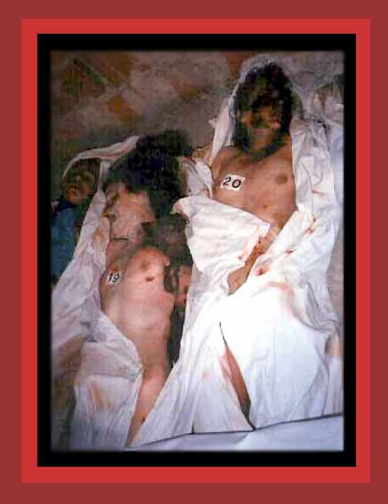

Here are Albanian women murdered by Serb forces in Racak, Kosovo, in 1999. Source:
"Photographic Evidence
of Kosovo Genocide and Conflict"
Next
photo of those murdered by government
Return
to Photographs of Democide, Room 1
Home